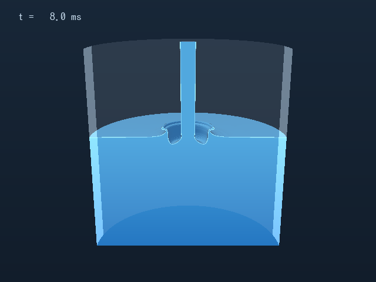
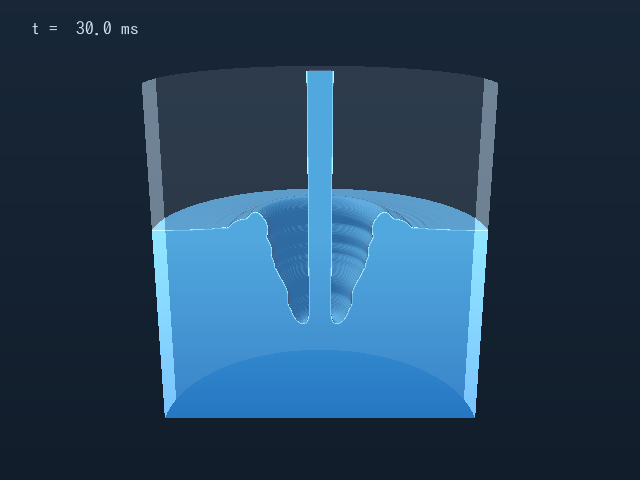
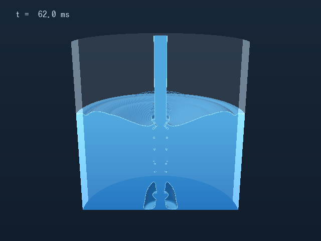
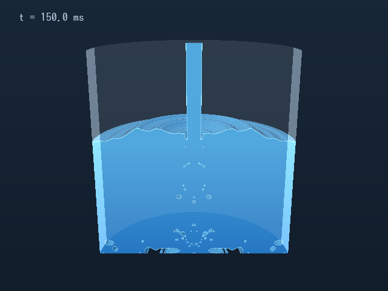
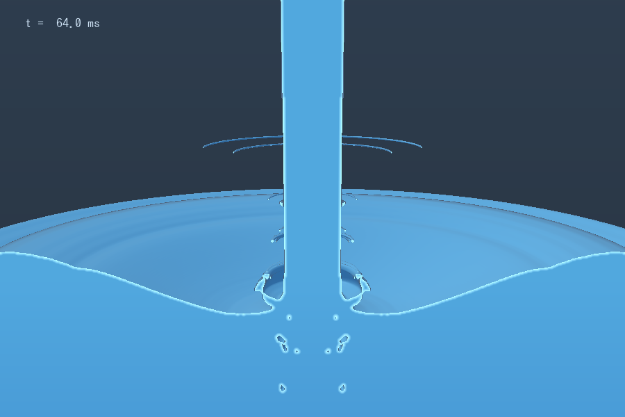

水が入ったコップに、ウォーターサーバーから水を足す。そのとき立つ「水滴の柱」と「水面の細かい飛沫」をどうすれば抑えられるか。下の装置で、コップの高さと傾きを変えて試せます。
「近づけるか、離すか」の二択で悩むより、水流を水面に直接落とさないほうがずっと効きます。内壁が水の勢いを受け止め、水は薄い膜になって斜めに滑り込むので、空気を巻き込む穴ができません。下の手順は、自作の流体シミュレーション 3 種類から導いた目安です（1〜5 が本命、6 は傾けられないときの次善策）。
表は半経験モデルの計算値（120 mL 入りの 335 mL タンブラーに、流量 1.5 L/分で 150 mL 足す場合）。数字そのものより桁の違いを見てください。
注ぎ始めの水の先端は、表面張力で丸まった少し太い塊になっています。これが水面に突っ込むと深いクレーターを掘り、続く水柱のまわりに空気の筒が伸びます。数十ミリ秒後、この筒が水圧で水柱に向かって一気に潰れ、ぶつかった所から細かい水滴が水柱に沿って上向きに噴き出します。続いて水柱の根元に水の「襟」がせり上がります。潰れた筒は空気を閉じ込めたまま、たくさんの泡になります。




軸対称 DNS（ノズル〜水面 10 cm、0.1 mm 格子）を軸まわりに回転させ、手前半分を切り取って描いたもの。切り口の濃い青が水、白い穴が空気です。

64 ms の拡大。水柱のまわりを水滴が輪になって上っていきます（軸対称計算なので輪になりますが、実際にはこの輪が無数の粒に分かれ、水柱を取り巻く「水滴の柱」に見えます）。
斜めの線より上の点は、ノズルの高さまで水滴が届く計算。7 cm と 10 cm の間で急に激しくなります。ノズルに水滴が付くと、そこから雑菌が増える原因になります。いちばん高い粒は格子でぎりぎり表せる細かい粒なので、上位 10% の値もあわせて見てください。
この空気が後で浮いてきて弾け、次の「細かい飛沫」の元になります。
同じ H = 10 cm で、先頭の塊を水柱と同じ太さ（レバーをそっと開けた場合に相当）にした計算と比べました。打ち上がる水滴の到達点は 13 cm → ? cm、閉じ込められる空気は 2.5 mL → ? mL。
どちらも実時間の約 1/30 のスローモーション（0.2 秒を 6.7 秒で）。手前半分を切り取った 3D 断面です。14 cm では空洞が水深 4 cm のコップの底まで達し、底から水柱に沿って一気に潰れて、細かい水滴が勢いよく吹き上がります。
水面で細かく跳ねているのは、巻き込まれた気泡が浮いてきて破裂するときに、穴の底から立つ細いジェットがちぎれた粒です（炭酸飲料の上に漂うミストと同じ仕組み）。半径 0.1〜1 mm の泡からは、直径 20〜400 µm ほどの粒が 1〜10 m/s で打ち出されます。ただ小さい粒ほど空気抵抗ですぐ止まるので、届くのは高くても 6 cm ほどです。
泡ができるかどうかは、「水面に突っ込む速さ」と「空気を巻き込み始める速さ」の比べっこで決まります。ノズルから離すほど水柱は重力で速くなり、同時に表面の小さなくびれ（Rayleigh–Plateau 不安定）も育って凸凹になります。凸凹な水柱ほど低い速さで空気を巻き込むので、二つの線はある落下距離で交差します。
交点の位置は、水柱が出口でどれだけ乱れているかで大きく動きます（静かなサーバーなら約 18 cm、ボトルが「ゴボッ」と脈打つ荒いものなら約 4 cm）。水温や流量の影響は 1 cm 程度です。
縦軸は対数。まっすぐ落とすと、交点を越えたところで泡の数が数万倍に跳ね上がります。
泡が弾けたときの一番上の粒（Deike ほか 2018 の速度則と、Gañán-Calvo 型の粒径則）を空気抵抗つきで飛ばした高さ。だから水面がノズルに近すぎると、この粒がノズルに届きます。
水面の泡が弾けると、穴の底から細いジェットが立ち、先端がちぎれて粒になります。
つまり「近づけるか、離すか」への答えは、近づける側に寄せるです。水面をノズルから 8 cm 以内にすれば、注ぎ始めの水滴はほとんど上がらず（DNS では 7 cm までは 2 cm ほど、10 cm で急に激しくなる）、泡もできません（泡が増え始めるのは約 10 cm から）。近づけすぎて困るのはコップがノズルに触れることだけなので、縁とノズルの間に 2 cm ほど空ければ十分です。
レバーを閉じると、水柱の尻尾が細くなりながら水面に吸い込まれ、その跡に真ん中から小さな柱（Worthington ジェット）が立ちます。柱自体は高さ数 mm と小さいのですが、先端からちぎれた粒が一列になって真上、つまりノズルの方向へ飛んでいきます。DNS では、ちぎれた粒が水面から 10 cm（ノズル〜水面 7 cm のとき）、22 cm（14 cm のとき）まで届く計算で、どちらもノズルの高さを超えました。止めるときも水流を内壁に当てたままにしておけば、尻尾は膜になって壁を伝うので、真ん中の柱はできません。
軸対称の計算では、水面の波がぴったり軸上に集まるため、真上に飛ぶ粒は実際より強めに出ている可能性があります。
傾けすぎると縁からこぼれ、当てる位置も縁に近づきます。上限は「水面が一番低い縁から 8 mm 以上下」「当たる点が縁から 1.5 cm 以上下で、水面より上」の条件から計算しました。
C と OpenMP で書いた二相流ソルバー。PLIC-VOF（Weymouth–Yue の質量保存型移流）、高さ関数による曲率、balanced-force の表面張力、密度比 830 の圧力方程式をマルチグリッド前処理つき共役勾配法で解きます。0.1 mm 格子・22 万セル、1 ケース 1 万 5 千ステップ。
落下する水柱の加速と細り、表面の凸凹の成長、注ぎ始めの塊（粘着粒子モデル）、空気の巻き込み、泡の大きさ、泡が弾けたときの粒、空気抵抗つきの弾道、傾けたコップの壁の膜流れとこぼれ限界を、文献の式でつないだ Python パッケージ。
粒子と格子を組み合わせた FLIP 法でコップと水柱を解き、泡や飛沫のような格子より小さい現象は 2 の式で発生させています。